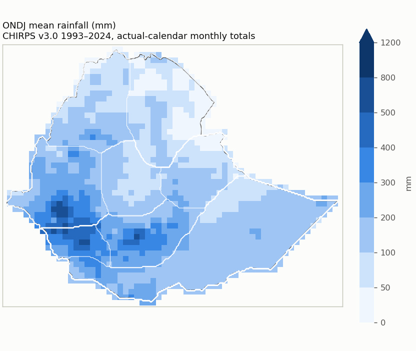
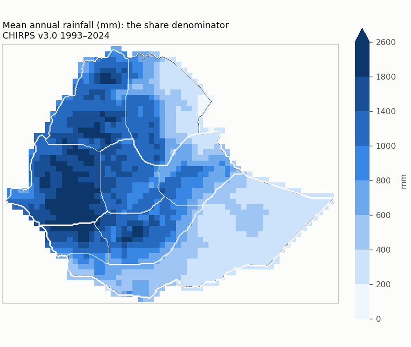
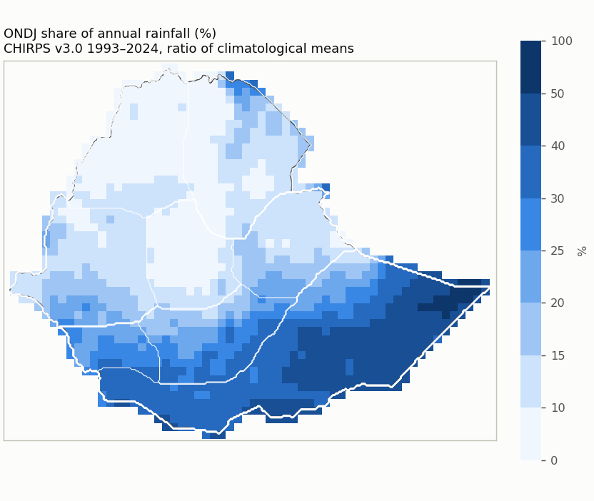
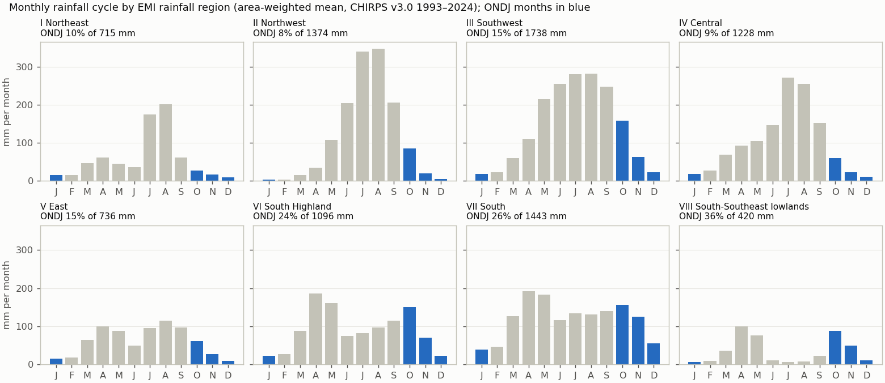
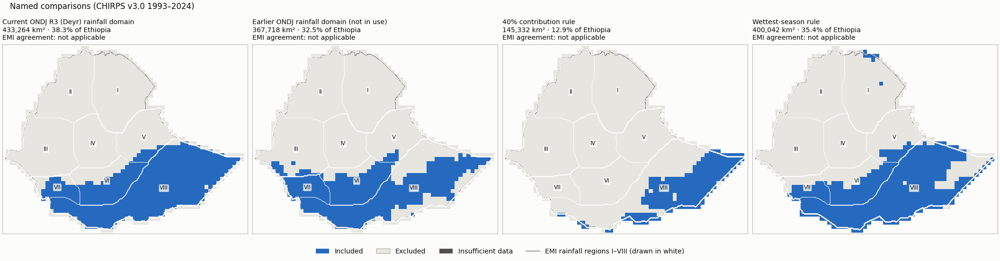
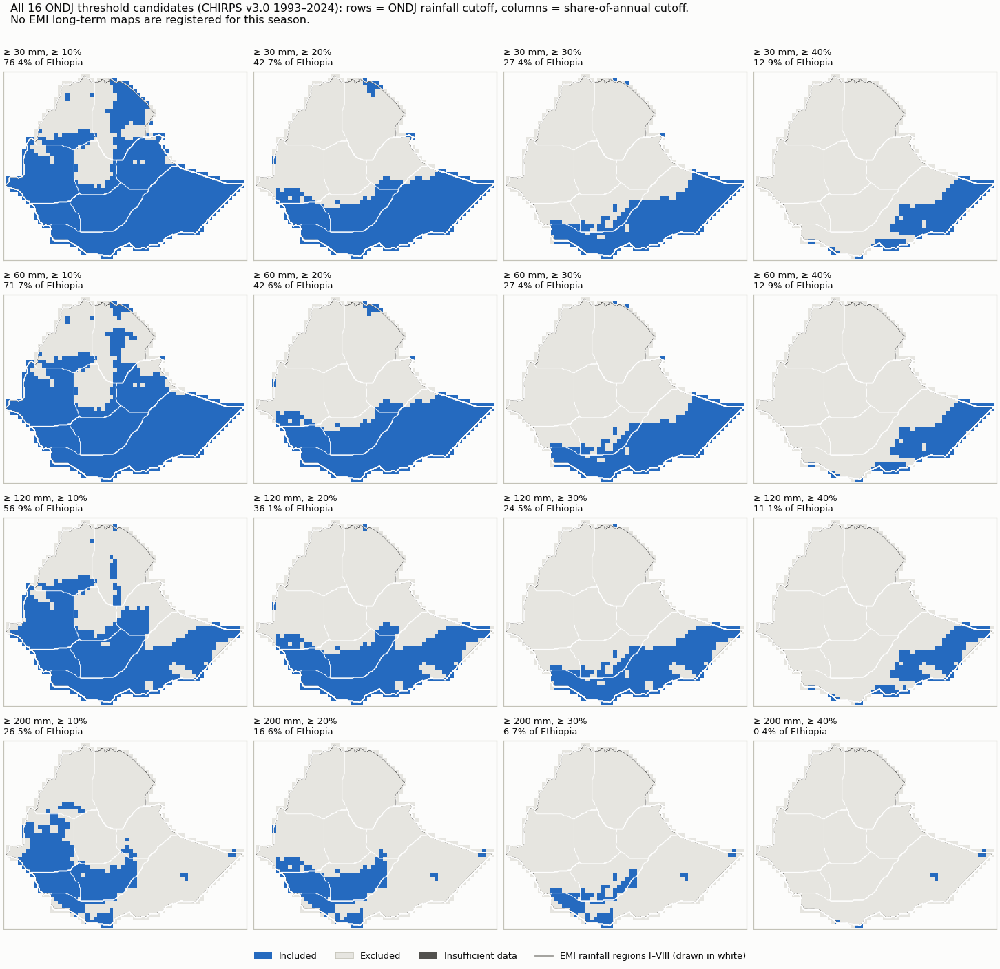
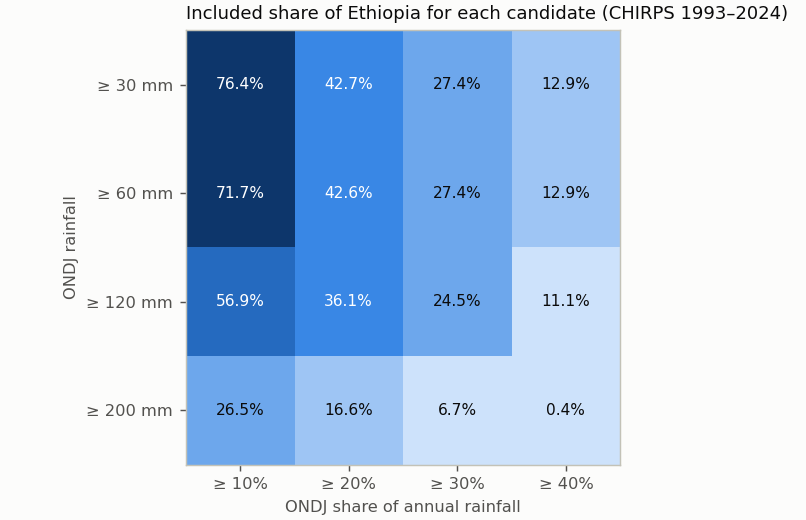
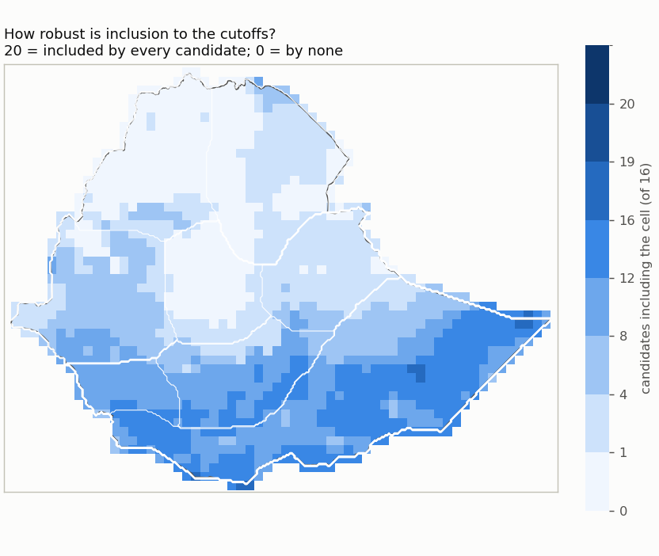
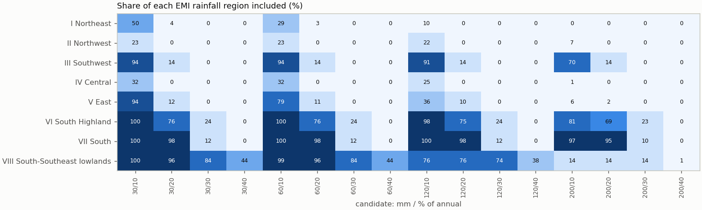
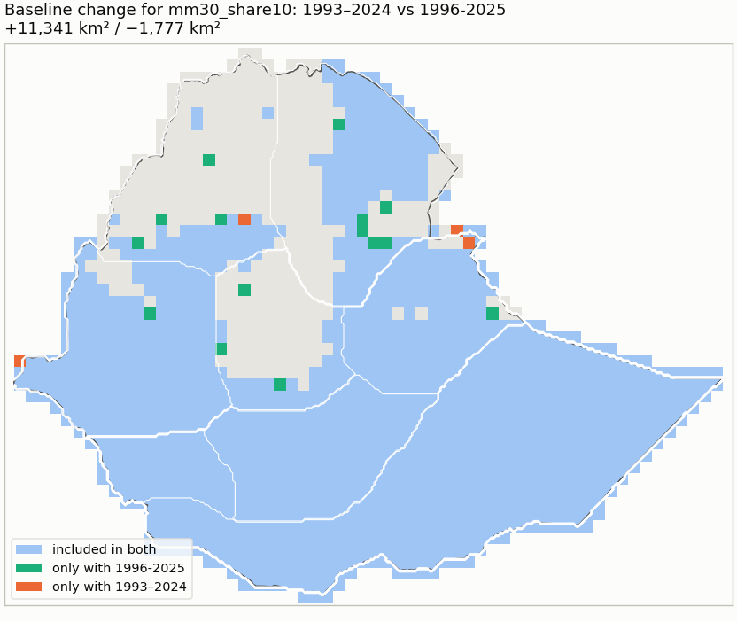

ONDJ rainfall domain review ondj_chirps_domain_review_v1
CHIRPS v3.0 (0.05 deg monthly, 0.25 deg block mean) 1993–2024 · built 2026-10-10T23:38:29+00:00 · fingerprint c8bc47ba0fd5
Selected candidate: none yet. The review shows the evidence; a domain is exported only after an explicit selection.
1. Climatology
Ratio of climatological means from actual-calendar monthly totals (February 29 included); every year of the period required per cell.




Reference periods
| Period | Status | Note |
|---|---|---|
| 1993-2024 | available | |
| 1981-2010 | unavailable | 12 of 30 years are not in the data (1981-1992); the period is not shortened. |
| 1991-2020 | unavailable | 2 of 30 years are not in the data (1991-1992); the period is not shortened. |
| 1996-2025 | available |
Quality control
| Check | Result | Detail |
|---|---|---|
| Calendar | passed | Not applicable: the cache holds the published monthly totals (calendar months, February 29 included as published); there is no daily cycle. |
| Units | mm | mm (monthly accumulation of daily mm amounts; no rate conversion) |
| Years | 1993–2025 (33) | gaps: none |
| Completeness | 0 cells | Cells touching Ethiopia whose CHIRPS record is not complete for every year and month. |
| Area | 1,129,938 km² | 3.6 km² beyond the grid; cell bounds intersected with the Ethiopia polygon, WGS84 geodesic areas |
| Source | CHIRPS v3.0 (0.05 deg monthly, 0.25 deg block mean) | sha256 17a229d0813d23f4… |
| Nested candidates | yes | raising either cutoff never adds a cell |
2. References
Registered EMI climatology panels (climatologies printed in a 2026 publication; their averaging period is not documented). The comparison mode follows the evidence: drafts stay visual only.
| Reference | Mode | Why not higher | Digitization | Outline IoU | Control / check RMSE (km) | Document |
|---|

3. Candidate domains





| Candidate | mm | % of annual | Included km² | % of Ethiopia | Unknown km² | Agreement with EMI-implied membership | Baseline change | Files |
|---|---|---|---|---|---|---|---|---|
| mm30_share10 | ≥ 30 | ≥ 10 | 862,899 | 76.4 | 4 | — (unavailable) | 1981-2010: unavailable; 1991-2020: unavailable; 1996-2025: +11,341/−1,777 km² | NetCDF · GeoJSON |
| mm30_share20 | ≥ 30 | ≥ 20 | 482,905 | 42.7 | 4 | — (unavailable) | 1981-2010: unavailable; 1991-2020: unavailable; 1996-2025: +1,177/−0 km² | NetCDF · GeoJSON |
| mm30_share30 | ≥ 30 | ≥ 30 | 309,466 | 27.4 | 4 | — (unavailable) | 1981-2010: unavailable; 1991-2020: unavailable; 1996-2025: +6,125/−1,448 km² | NetCDF · GeoJSON |
| mm30_share40 | ≥ 30 | ≥ 40 | 145,332 | 12.9 | 4 | — (unavailable) | 1981-2010: unavailable; 1991-2020: unavailable; 1996-2025: +4,301/−3,158 km² | NetCDF · GeoJSON |
| mm60_share10 | ≥ 60 | ≥ 10 | 810,503 | 71.7 | 4 | — (unavailable) | 1981-2010: unavailable; 1991-2020: unavailable; 1996-2025: +6,816/−935 km² | NetCDF · GeoJSON |
| mm60_share20 | ≥ 60 | ≥ 20 | 480,894 | 42.6 | 4 | — (unavailable) | 1981-2010: unavailable; 1991-2020: unavailable; 1996-2025: +1,177/−0 km² | NetCDF · GeoJSON |
| mm60_share30 | ≥ 60 | ≥ 30 | 309,466 | 27.4 | 4 | — (unavailable) | 1981-2010: unavailable; 1991-2020: unavailable; 1996-2025: +6,125/−1,448 km² | NetCDF · GeoJSON |
| mm60_share40 | ≥ 60 | ≥ 40 | 145,332 | 12.9 | 4 | — (unavailable) | 1981-2010: unavailable; 1991-2020: unavailable; 1996-2025: +4,301/−3,158 km² | NetCDF · GeoJSON |
| mm120_share10 | ≥ 120 | ≥ 10 | 643,070 | 56.9 | 4 | — (unavailable) | 1981-2010: unavailable; 1991-2020: unavailable; 1996-2025: +9,856/−3,963 km² | NetCDF · GeoJSON |
| mm120_share20 | ≥ 120 | ≥ 20 | 407,612 | 36.1 | 4 | — (unavailable) | 1981-2010: unavailable; 1991-2020: unavailable; 1996-2025: +4,574/−3,209 km² | NetCDF · GeoJSON |
| mm120_share30 | ≥ 120 | ≥ 30 | 277,158 | 24.5 | 4 | — (unavailable) | 1981-2010: unavailable; 1991-2020: unavailable; 1996-2025: +9,937/−3,211 km² | NetCDF · GeoJSON |
| mm120_share40 | ≥ 120 | ≥ 40 | 125,164 | 11.1 | 4 | — (unavailable) | 1981-2010: unavailable; 1991-2020: unavailable; 1996-2025: +6,343/−2,903 km² | NetCDF · GeoJSON |
| mm200_share10 | ≥ 200 | ≥ 10 | 299,402 | 26.5 | 4 | — (unavailable) | 1981-2010: unavailable; 1991-2020: unavailable; 1996-2025: +3,302/−2,291 km² | NetCDF · GeoJSON |
| mm200_share20 | ≥ 200 | ≥ 20 | 187,803 | 16.6 | 4 | — (unavailable) | 1981-2010: unavailable; 1991-2020: unavailable; 1996-2025: +2,541/−1,530 km² | NetCDF · GeoJSON |
| mm200_share30 | ≥ 200 | ≥ 30 | 75,625 | 6.7 | 4 | — (unavailable) | 1981-2010: unavailable; 1991-2020: unavailable; 1996-2025: +6,370/−1,533 km² | NetCDF · GeoJSON |
| mm200_share40 | ≥ 200 | ≥ 40 | 4,363 | 0.4 | 4 | — (unavailable) | 1981-2010: unavailable; 1991-2020: unavailable; 1996-2025: +999/−0 km² | NetCDF · GeoJSON |
Named comparisons
| Rule | Included km² | % of Ethiopia | Agreement with EMI-implied membership | Files |
|---|---|---|---|---|
| Current ONDJ R3 (Deyr) rainfall domain: R3 membership, ONDJ >= 30 mm, patches < 3 cells removed | 433,264 | 38.3 | Regime membership is not an amount/share threshold. | NetCDF · GeoJSON |
| Earlier ONDJ rainfall domain (not in use): ONDJ >= 120 mm and >= 20% of annual (1993-2024) | 367,718 | 32.5 | Not an amount/share threshold rule. | NetCDF · GeoJSON |
| 40% contribution rule: ONDJ >= 40% of annual and >= 60 mm (no cleanup) | 145,332 | 12.9 | Not an amount/share threshold rule. | NetCDF · GeoJSON |
| Wettest-season rule: ONDJ wetter than FMAM and JJAS, >= 60 mm (no cleanup) | 400,042 | 35.4 | Not an amount/share threshold rule. | NetCDF · GeoJSON |
Domain files: one NetCDF (membership codes: 1 included, 0 excluded, -1 insufficient data, -2 outside Ethiopia) and one GeoJSON outline (cells clipped to the border) per domain, in domains/. They are review candidates, not operational masks.
4. Assessment
Reference agreement
| Reference | Mode | Exact class | Within one class | CHIRPS wetter / drier | Outside-interval median / p90 | Comparable / uncertain area |
|---|
Agreement with EMI-implied membership counts only area where the EMI class lies entirely on one side of a cutoff (half a legend unit tolerance); straddling classes are undecided, never guessed.
Largest changes between neighbouring cutoffs
| From | To | Changed cutoff | Area switching |
|---|---|---|---|
| mm30_share10 | mm30_share20 | annual share percent | 379,994 km² |
| mm120_share10 | mm200_share10 | seasonal rainfall mm | 343,668 km² |
| mm60_share10 | mm60_share20 | annual share percent | 329,609 km² |
| mm120_share10 | mm120_share20 | annual share percent | 235,458 km² |
| mm120_share20 | mm200_share20 | seasonal rainfall mm | 219,809 km² |
| mm120_share30 | mm200_share30 | seasonal rainfall mm | 201,533 km² |
| mm30_share20 | mm30_share30 | annual share percent | 173,439 km² |
| mm60_share20 | mm60_share30 | annual share percent | 171,428 km² |
| mm60_share10 | mm120_share10 | seasonal rainfall mm | 167,433 km² |
| mm30_share30 | mm30_share40 | annual share percent | 164,134 km² |

Dataset sensitivity: not assessed (CHIRPS only). Forecast skill is reported for a selected domain but never used to move its boundary.
Inputs
{
"review_config": "bb14451688935ea30d6da0fde81b0f38d8340a7bfe69136927372fca2f595838",
"monthly_cache": "6f204093638aa6664abd5d4b12ad48d448c5af5edea71ce87b4592c60c037b17",
"country_boundary": "96be2b2fc519922d12f4bb5165bad2ad518c2a3f9c8237a4481260d612b12b9f",
"country_mask": "57ad8861c598abb9f175012920e5d0ef058e5b643cd6e4987cad3da6ac0b9e16",
"reference_registry": "66d3098a0748af413afbd475edcbf173c2658cb808633380427bb9063bc38fb8",
"regions_mask": "a6770d527fe05d756d2b158a8765a5b45e6694bc2e1944f4046a2a0d5d354658",
"comparator:r3_regime_rule": "336c572d69af3c718de2ef0e537a2d2d98d73b98cab9b02f0b234501a523d83f",
"comparator:earlier_mm120_share20": "fbd37c131875202eef68b662317f1de2419fb940bc9f5362d2727b2f1524b263",
"chirps_source_sha256": "17a229d0813d23f4c3a828717b1ca768d36afe0748f388fa5fd9d5a85e95ba50",
"reference_documents": {},
"season_months": [
10,
11,
12,
1
],
"application_period": [
1993,
2024
],
"thresholds": {
"seasonal_rainfall_mm": [
30,
60,
120,
200
],
"annual_share_percent": [
10,
20,
30,
40
]
},
"method_version": "rainfall_domain_review_v1"
}